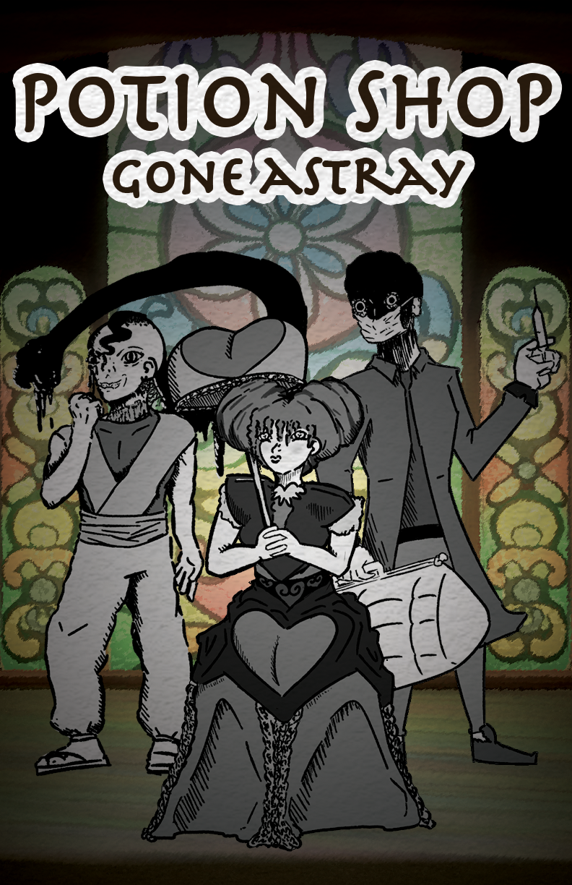
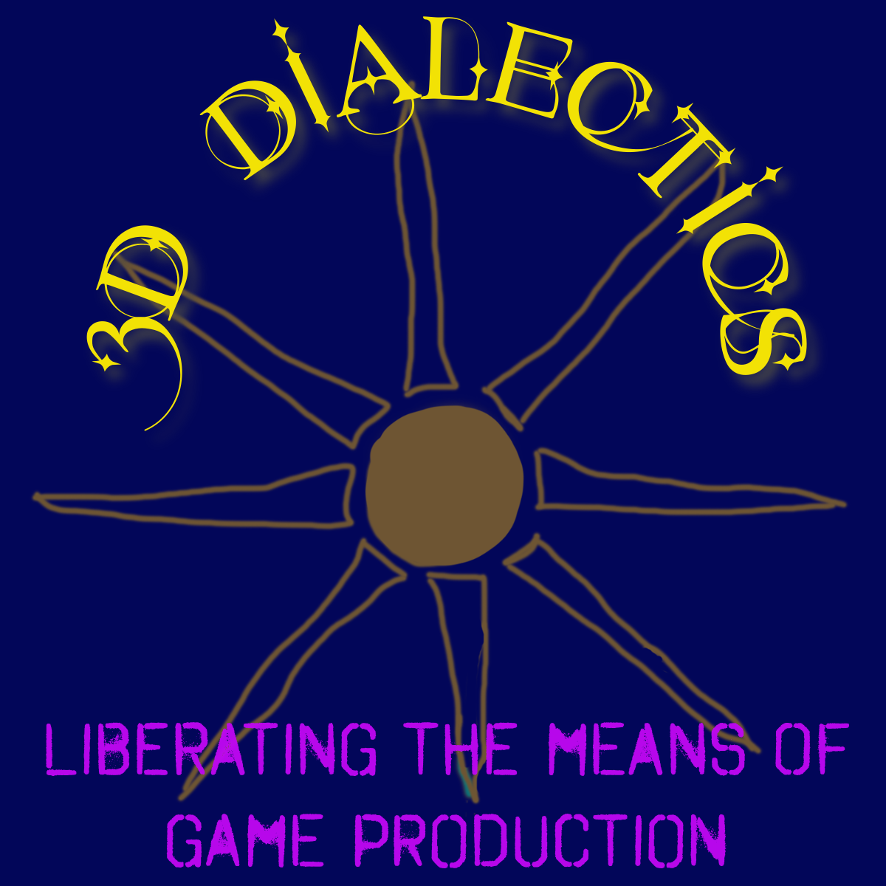
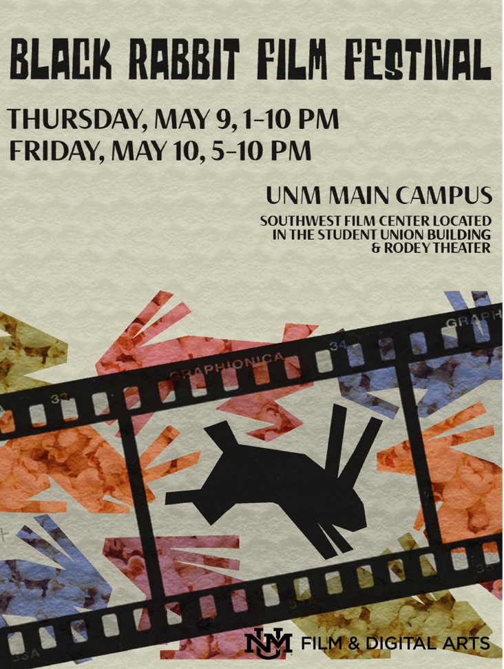

“Potion Shop: Gone Astray” (PC Game, 2024)
Role: Unity Developer, Programmer, Game Designer
Potion Shop: Gone Astray is a 2D/3D, dark-fantasy PC game where the player character is the owner of a magical potion shop. The player character must take turns running the potion shop through a 2D interface and collecting ingredients from a maze inhabited by monsters.
The player character must decide whether to make morally correct choices when selling their potions. For instance, a Death potion is going to bring some bad karma with it. The player character must make enough money at the end of the week to pay the Landlord, or else...
Contributions Included:
- Sole programmer and Unity developer for this project
- Designed game mechanics, including:
- Potion Brewing System
- Order System
- Book UI System
- Spatial, Grid-Based Inventory System
- Morality System
- Time Progression
- Tutorial and Instruction Systems

“Potion Shop: Gone Astray” Trailer
Production Assets:
“Potion Shop: Gone Astray” Software Production Schedule
“Potion Shop: Gone Astray” Unity Project Designer Documentation
“Deadly Dark” (PC Game, 2023)
Role: Game Designer and Artist
Deadly Dark is a first-person horror game for PC that I helped produce as part of my Advanced Game Development course at the University of New Mexico. I worked as a game designer as part of a four-person team that created this game for our final project.
Contributions Included:
- Drafted game design document.
- Initial design and concept of main game level, which is an abstraction of a modern art museum.
- Lead development of story and narrative.
- Contributed to design of game mechanics and core game loop.
- Created 20 video art works and virtual installations for virtual museum level.
- Contributed 5 analog drawings.
- Created animations for “the Entity” (the enemy in-game) using Maya 2024, and helped implement them in Unity.
- Created game trailer.
- Cinematic screenshot collection for itch.io page.
- Idea for FOV adjustment setting, to enhance player experience.
3D Dialectics LLC (2023-2024)
Role: Owner/Founder
3D Dialectics LLC is an analog and digital art studio in Albuquerque, NM. We engage in conversation with many forms of contemporary art to find a synthesis of human meaning hidden between. The studio and its practices are in dialogue with the world around us, from politics to pop culture, because art is an expression of humanity.

Black Rabbit Film Festival Website (2024)
Role: Website Designer and Developer
The website for the Black Rabbit film festival was built using HTML and CSS, and is designed using best practices derived from other film festival websites. The website is used as a portfolio for all groups who submitted their projects, where the students are able to use it to demonstrate their work to potential producers and employers.
